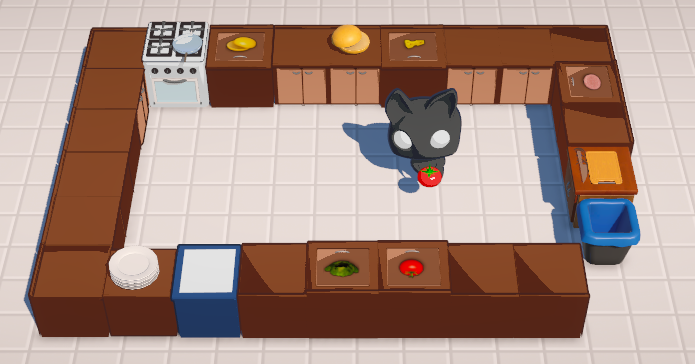

Projects
Meowster Chef 2023 — Work in progress
Tools: Unity, Blender, Krita
My very own on-going game project. The game is just another version of popular game called "Overcooked". The main goal of this project is for me to both develop and grow as a game developer. I want to widen my skill repertoire, especially the coding side. So far has been a really fun and enjoyable journey ♡
Louhi 2020
Tool: Aseprite
The second school game project. This project was made together in a group of 5 people, where I was in charge of 2D assets with another person. Louhi is 2D top-down point&click game and the development time was around 2 months. Unfortunately the project never finished because of the scale of game and the time constraints, but overall it was really educating journey about teamwork and game design.
Astronoob 2019
My first ever game project made for school course: 3D endless runner. During the development I only owned 5 years old ready-to-retire laptop and because of that the development process was tedious at times. The project consists of ready made assets and materials which I then combined inside Unity. Coding was done by myself and I created the music using AI music software AIVA which I then edited in Audacity to make it more "static". This project was my first everything in journey of game development, and I think that can be seen.